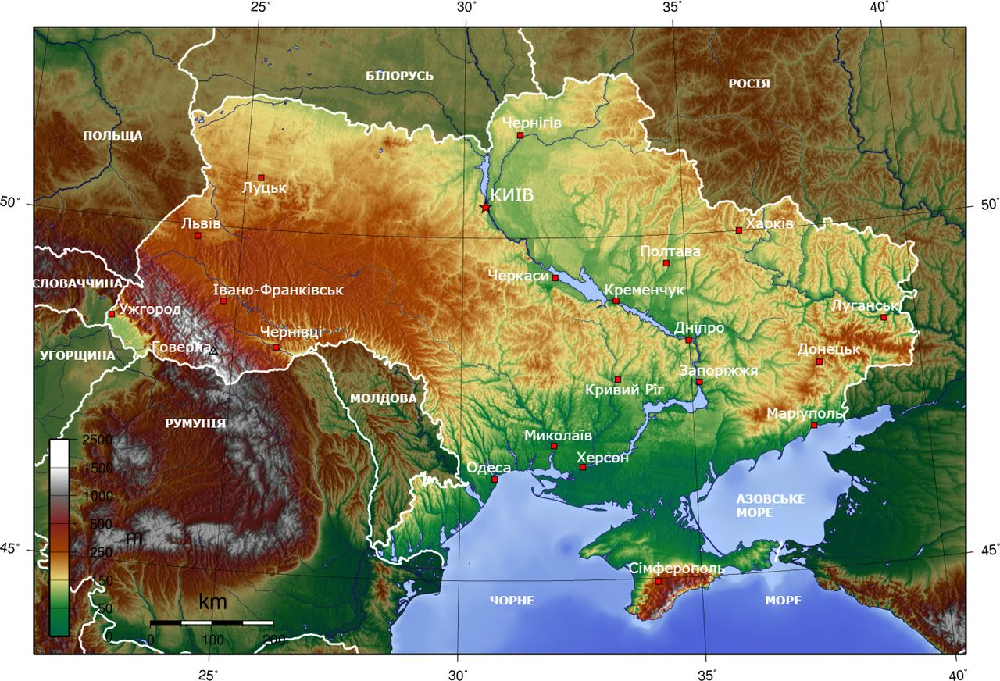

Україна

Слов'янське слово «Україна» вперше згадується в Київському літописному зводі за Іпатіївським списком під 1187 роком[37]. Ним окреслювали терени Переяславського князівства, що входило до історичного ядра Русі поруч із Київським і Чернігівським князівствами. Це слово також зустрічається в руських літописах під 1189, 1213, 1280 і 1282 роками[37], позначаючи Галичину, Західну Волинь, Холмщину й Підляшшя. У литовських і польських хроніках та офіційних документах XIV—XVII століття «Україною» в широкому значенні називали руські землі Галичини, Волині, Київщини, Поділля й Брацлавщини, а у вузькому — територію Середнього Подніпров'я[38]. Таке ж двояке значення цього слова зберігалося й із середини XVII століття, після постання руської держави Війська Запорозького.
Протягом початку 1670-х — першої половини 1680-х років назва «Україна» закріпилася в офіційному дискурсі Війська Запорозького, Московського царства, Речі Посполитої та Молдавського князівства як новий політонім. Ним почали позначати державу, яка була під владою гетьманів Війська Запорозького. При цьому дана назва була синонімічною і вживалася для кращого розуміння та виокремлення державного політичного утворення, яке постало на теренах Східної Європи від часів Української революції на чолі з гетьманом Богданом Хмельницьким.
У зв'язку з входженням частини земель Русі до складу Московського царства, а згодом і Російської імперії, слово «Україна» закріпилося за регіоном Подніпров'я; ним також позначали Слобожанщину. Після перейменування Московського царства на Російську імперію 1721 року, українські землі почали називати «Малоросією». У другій половині XIX століття — початку XX століття, під впливом національного руху руської інтелігенції, назва «Україна» набирала значення руської етнічної території, а сам етнонім «русини» був витіснений етнонімом «українці». 1917 року була проголошена держава, яка використала слово «Україна» у своїй офіційній назві, — Українська Народна Республіка.
Етимологія слова «Україна» достеменно не відома. Згідно з теорією, якої дотримуються більшість українських дослідників, «Україна» походить від слів «країна» чи «край», тобто «у» означає «рідний», «свій». Таким чином «україна» — антонім слова «чужина». Згідно з іншою теорією, що утворилася під впливом польської та російської історіографії, воно означає «околицю» (рос. окраину) чи «прикордоння».
Розташування України
Україна розташована в південно-східній частині Європи. Вона має спільні сухопутні державні кордони з Білоруссю на півночі, з Польщею на заході, зі Словаччиною, Угорщиною, Румунією і Молдовою на південному заході й із Росією на сході. Південь України омивається Чорним та Азовським морями. Морські кордони вона має з Румунією і Росією.
Загальна площа України становить 603 700 км², вона становить 5,7 % території Європи й 0,44% території світу. За цим показником вона є другою за величиною серед країн Європи після Росії (або найбільшою країною, яка повністю лежить у Європі). Площа виключної морської економічної зони України становить 72 658 км². Код країни за системою ISO 3166-1-alpha-2 — UA. Територія України витягнута із заходу на схід на 1316 км і з півночі на південь на 893 км, лежить приблизно між 52° 20′ та 44° 23′ північної широти й 22° 5′ і 41° 15′ східної довготи.
- Крайній північний пункт—село Грем'яч (урочище Петрівське)Чернігівської області.
- Крайній південний пункт — смт Форос Автономної Республіки Крим.
- Крайній західний пункт — село Соломоново Закарпатської області.
- Крайній східний пункт — село Рання Зоря Луганської області.
- Географічний центр України розташований на північній околиці села Мар'янівка Звенигородського району Черкаської області.
Загальна протяжність кордонів 6993 км, із них сухопутних 5638 км. Довжина морської ділянки кордону: 1355 км (Чорним морем — 1056,5 км; Азовським морем — 249,5 км; Керченською протокою — 49 км).
Клімат України
Територія України лежить переважно в помірно-континентальній області помірного кліматичного поясу зі зростанням континентальности з північного заходу на південний схід. Південний берег Криму виділяється в окремий регіон субтропічного середземноморського клімату. В Українських Карпатах і Кримських горах висота місцевості й експозиція схилів зумовлюють вертикальну зональність клімату.
Середньорічна температура повітря в Україні коливається від +11…+13 °C на півдні до +5…+7 °C на півночі. Пересічна середня температура найхолоднішого місяця (січня) змінюється від −7…−8 °C на північному сході до 0 °C у степовому Криму й +2…+4 °C на Південному узбережжі Криму. У найтеплішому місяці (липні) середньомісячна температура змінюється від +17…+19 °C на півночі й північному заході країни до +22…+23 °C у південних районах і +25 °C — на Південному узбережжі Криму.
Найнижча температура повітря на території України зафіксована 8 січня 1935 р. у Луганську. Унаслідок вторгнення повітряних течій з Арктики температура знизилася тут до −42 °C.
Основною закономірністю в розподілі опадів на території України є їхнє зменшення з півночі й північного заходу в напрямку на південь і південний схід. Найбільші річні суми опадів помічено в Українських Карпатах — 1500 мм (полонина Плай — 1663 мм) і Кримських горах (1000—1200 мм), найменші — на причорноморському узбережжі й на Присивашші (від 450—400 до 300 мм). На переважній частині території кількість опадів у середньому змінюється від 650—600 мм на заході до 450—400 мм на півдні й південному сході. Основна їхня маса припадає на теплий період року, за винятком Південного берега Криму. Узимку опади бувають у вигляді снігу, майже на всій території країни; висота снігового покриву — 10—30 см, а в горах досягає 40 см.